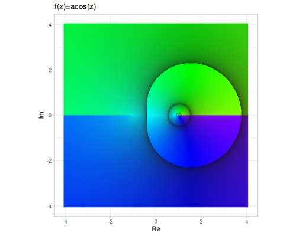

Complex numbers and quaternions
(ns complex-quaternions
(:require [fastmath.complex :as cplx]
[fastmath.quaternion :as quat]
[fastmath.vector :as v]
[fastmath.dev.codox :as codox]
[fastmath.dev.ggplot :as gg]
[fastmath.dev.clay :as utls]
[scicloj.kindly.v4.kind :as kind]
[fastmath.core :as m]
[fastmath.matrix :as mat]))Complex numbers
complex,ensure-complex
Complex numbers extend the concept of real numbers by including an imaginary unit \(i\), where \(i^2 = -1\).
In fastmath, complex numbers are represented as 2-dimensional vectors using the fastmath.vector/Vec2 type, where the x-component is the real part and the y-component is the imaginary part.
You can create complex numbers using the dedicated complex function, the general 2D vector constructor fastmath.vector/vec2, or by converting sequences/arrays using functions like fastmath.vector/seq->vec2. ensure-complex accepts single argument which can be a real or complex number.
(cplx/complex) ;; => #vec2 [0.0, 0.0]
(cplx/complex 1.0) ;; => #vec2 [1.0, 0.0]
(cplx/complex 1.0 -2.0) ;; => #vec2 [1.0, -2.0]
(v/vec2 1.0 -2.0) ;; => #vec2 [1.0, -2.0]
(v/seq->vec2 [1.0 -2.0]) ;; => #vec2 [1.0, -2.0]
(cplx/ensure-complex 2.0) ;; => #vec2 [2.0, 0.0]
(cplx/ensure-complex (cplx/complex 1.0 -2.0)) ;; => #vec2 [1.0, -2.0]The implementation handles floating-point subtleties, including special values (##Inf, ##NaN) and signed zero (+0.0, -0.0), for robust calculations across a wide range of inputs.
This section covers constants, predicates, and a comprehensive set of operations including basic arithmetic, exponentiation, logarithms, trigonometric functions, and their inverses.
Plots are based on domain coloring in HSB space, where
- hue - represents argument
- saturation/brightness - represents fractional part of logarithm of magnitude
We will use these numbers to illustrate operations:
(def z1 (cplx/complex 0.5 -1.5))(def z2 (cplx/complex -0.5 2.5))(def z3 (cplx/complex 1.5 0.5))z1 ;; => #vec2 [0.5, -1.5]
z2 ;; => #vec2 [-0.5, 2.5]
z3 ;; => #vec2 [1.5, 0.5]Constants
List of defined complex constants.
| constant | z | value |
|---|---|---|
| I | \(0+i\) | #vec2 [0.0, 1.0] |
| -I | \(0-i\) | #vec2 [0.0, -1.0] |
| I- | \(0-i\) | #vec2 [0.0, -1.0] |
| ZERO | \(0+0i\) | #vec2 [0.0, 0.0] |
| ONE | \(1+0i\) | #vec2 [1.0, 0.0] |
| TWO | \(2+0i\) | #vec2 [2.0, 0.0] |
| PI | \(\pi+0i\) | #vec2 [3.141592653589793, 0.0] |
Basic operations
This section provides a collection of functions for performing fundamental operations on complex numbers. These operations include extracting components, calculating magnitude and argument, finding conjugates, performing arithmetic (addition, subtraction, multiplication, division), negation, reciprocals, and square roots.
re,imdelta-eq,csgn,flipabs,norm,normalize,conjugateargadd,adds,sub,negscale,mult,mult-I,mult-I-,muladd,sqdiv,reciprocalsqrt,sqrt1z
Components
re: Returns the real part of a complex number \(z\). For \(z = a + bi\), returns \(a\).im: Returns the imaginary part of a complex number \(z\). For \(z = a + bi\), returns \(b\).
(cplx/re z1) ;; => 0.5
(cplx/im z1) ;; => -1.5Properties and Comparisons
abs: Calculates the magnitude or modulus of a complex number \(|z|\). For \(z = a + bi\): \[|z| = \sqrt{a^2 + b^2}\] This corresponds to the length of the vector(Vec2. a b).norm: Calculates the squared magnitude \(|z|^2\). For \(z = a + bi\): \[|z|^2 = a^2 + b^2\] This avoids the square root calculation and is often used when comparing magnitudes.arg: Computes the argument (phase angle) of a complex number \(z\). This is the angle \(\phi\) such that \(z = |z| (\cos \phi + i \sin \phi)\), and is typically in the range \((-\pi, \pi]\). Calculated as: \[\operatorname{arg}(z)=\operatorname{atan2}(\operatorname{im}(z), \operatorname{re}(z))\]normalize: Sets magnitude of a complex number \(z\) to 1.0: \[\frac{z}{|z|}\]conjugate: Returns the complex conjugate of \(z\), denoted \(\bar{z}\). For \(z = a + bi\): \[\bar{z} = a - bi\] Geometrically, this is a reflection across the real axis.flip: Swaps the real and imaginary parts of a complex number. For \(z = a + bi\), returns \(b + ai\).delta-eq: Checks if two complex numbers are approximately equal within a given tolerance. This is essential for floating-point comparisons and equivalent to checking if \(|z_1 - z_2| < \text{tolerance}\).csgn: Implements the complex signum function. Returns 0 for the zero complex number. For non-zero \(z\), it returns the sign of the real part \(\operatorname{sgn}(\operatorname{re}(z))\).
z1 ;; => #vec2 [0.5, -1.5]
(cplx/abs z1) ;; => 1.5811388300841898
(cplx/norm z1) ;; => 2.5
(cplx/arg z1) ;; => -1.2490457723982544
(cplx/normalize z1) ;; => #vec2 [0.31622776601683794, -0.9486832980505138]
(cplx/abs (cplx/normalize z1)) ;; => 0.9999999999999999
(cplx/conjugate z1) ;; => #vec2 [0.5, 1.5]
(cplx/flip z1) ;; => #vec2 [-1.5, 0.5]
z2 ;; => #vec2 [-0.5, 2.5]
(cplx/abs z2) ;; => 2.5495097567963922
(cplx/norm z2) ;; => 6.5
(cplx/arg z2) ;; => 1.7681918866447774
(cplx/normalize z2) ;; => #vec2 [-0.19611613513818404, 0.9805806756909202]
(cplx/abs (cplx/normalize z2)) ;; => 1.0
(cplx/conjugate z2) ;; => #vec2 [-0.5, -2.5]
(cplx/flip z2) ;; => #vec2 [2.5, -0.5]
(cplx/csgn z1) ;; => 1.0
(cplx/csgn z2) ;; => -1.0
(cplx/csgn cplx/ZERO) ;; => 0.0
(cplx/delta-eq (cplx/complex 0.001) cplx/ZERO) ;; => false
(cplx/delta-eq (cplx/complex 0.001) cplx/ZERO 0.01) ;; => trueArithmetic Operations
add: Computes the sum of two complex numbers, \(z_1 + z_2\). If \(z_1 = a + bi\) and \(z_2 = c + di\): \[z_1 + z_2 = (a+c) + (b+d)i\]adds: Adds a real scalar \(s\) to a complex number \(z\). For \(z = a + bi\): \[z + s = (a+s) + bi\]sub: Computes the difference of two complex numbers, \(z_1 - z_2\). If \(z_1 = a + bi\) and \(z_2 = c + di\): \[z_1 - z_2 = (a-c) + (b-d)i\]neg: Returns the negation of a complex number, \(-z\). For \(z = a + bi\): \[-z = -a - bi\]scale: Multiplies a complex number \(z\) by a real scalar \(s\). For \(z = a + bi\): \[z \cdot s = (as) + (bs)i\]mult: Computes the product of two complex numbers, \(z_1 \cdot z_2\). If \(z_1 = a + bi\) and \(z_2 = c + di\): \[z_1 \cdot z_2 = (ac - bd) + (ad + bc)i\]mult-I: Multiplies a complex number \(z\) by the imaginary unit \(i\). For \(z = a + bi\): \[z \cdot i = -b + ai\]mult-I-: Multiplies a complex number \(z\) by \(-i\). For \(z = a + bi\): \[z \cdot (-i) = b - ai\]muladd: Computes the fused multiply-add operation \[(x \cdot y) + z\] for complex numbers \(x, y, z\).sq: Computes the square of a complex number, \(z^2\). For \(z = a + bi\): \[z^2 = (a^2 - b^2) + 2abi\]div: Computes the division of two complex numbers, \(z_1 / z_2\). If \(z_1 = a + bi\) and \(z_2 = c + di\): \[z_1 / z_2 = \frac{z_1 \cdot \bar{z_2}}{|z_2|^2} = \frac{(ac+bd) + (bc-ad)i}{c^2+d^2}\]reciprocal: Computes the reciprocal of a complex number, \(1/z\). For \(z = a + bi\): \[1/z = \frac{\bar{z}}{|z|^2} = \frac{a - bi}{a^2+b^2}\]
(cplx/add z1 z2) ;; => #vec2 [0.0, 1.0]
(cplx/adds z1 -3.5) ;; => #vec2 [-3.0, -1.5]
(cplx/sub z1 z2) ;; => #vec2 [1.0, -4.0]
(cplx/neg z1) ;; => #vec2 [-0.5, 1.5]
(cplx/scale z1 5) ;; => #vec2 [2.5, -7.5]
(cplx/mult z1 z2) ;; => #vec2 [3.5, 2.0]
(cplx/mult-I z1) ;; => #vec2 [1.5, 0.5]
(cplx/mult-I- z1) ;; => #vec2 [-1.5, -0.5]
(cplx/muladd z1 z2 z3) ;; => #vec2 [5.0, 2.5]
(cplx/sq z1) ;; => #vec2 [-2.0, -1.5]
(cplx/div z1 z2) ;; => #vec2 [-0.6153846153846154, -0.07692307692307693]
(cplx/reciprocal z1) ;; => #vec2 [0.2, 0.6]Roots
sqrt: Computes the principal square root of a complex number: \[\sqrt{z} = \sqrt{\frac{|a| + x}{2}} + i \cdot \operatorname{sgn}(b) \cdot \sqrt{\frac{|z| - a}{2}}\]sqrt1z: Computes \(\sqrt{1 - z^2}\) for a complex number \(z\).
(cplx/sqrt z1) ;; => #vec2 [1.0200830432087846, -0.7352342586156434]
(cplx/sqrt z2) ;; => #vec2 [1.0123017723970438, 1.2348096526988264]
(cplx/sqrt z3) ;; => #vec2 [1.2411967672541269, 0.20141850719855633]
(cplx/sqrt1z z1) ;; => #vec2 [1.782428394950227, 0.4207742662340966]
(cplx/sqrt1z z2) ;; => #vec2 [2.686357605909836, 0.46531407331997443]
(cplx/sqrt1z z3) ;; => #vec2 [0.6335517491618166, -1.1838022718621541]Predicates
Predicates are functions that return a boolean value, indicating whether a complex number satisfies a specific condition. They are useful for checking the nature or state of a complex number, such as whether it is real, imaginary, zero, infinite, or invalid.
real?,imaginary?zero?inf?,nan?invalid?,valid?
real?: Checks if a complex numberzhas a zero imaginary part. \(z = a + bi\) is real if \(b = \operatorname{im}(z) = 0\).imaginary?: Checks if a complex numberzhas a zero real part. \(z = a + bi\) is pure imaginary if \(a = \operatorname{re}(z) = 0\).zero?: Checks ifzis the complex number \(0+0i\), which is true if both real and imaginary parts are zero.inf?: Checks if either the real or imaginary part ofzis positive or negative infinity (##Infor##-Inf).nan?: Checks if either the real or imaginary part ofzis Not a Number (##NaN).invalid?: Checks ifzis eitherinf?ornan?. Represents values that are not finite numbers.valid?: Checks ifzis a finite, non-NaN number. This is the opposite ofinvalid?.
(cplx/real? cplx/ONE) ;; => true
(cplx/real? cplx/I) ;; => false
(cplx/imaginary? cplx/ONE) ;; => false
(cplx/imaginary? cplx/I) ;; => true
(cplx/zero? cplx/ZERO) ;; => true
(cplx/zero? cplx/ONE) ;; => false
(cplx/inf? (cplx/complex ##Inf 1)) ;; => true
(cplx/nan? (cplx/complex 1 ##NaN)) ;; => true
(cplx/invalid? (cplx/complex ##Inf 1)) ;; => true
(cplx/invalid? (cplx/complex 1.0 2.0)) ;; => false
(cplx/valid? (cplx/complex 1.0 2.0)) ;; => true
(cplx/valid? (cplx/complex ##Inf 1)) ;; => falsePower and logarithms
Complex numbers extend the real-valued exponential and logarithm functions. Complex exponentiation allows raising a complex base to a complex power, while the complex logarithm is the inverse operation of exponentiation. Unlike real logarithms, the complex logarithm is multi-valued, but the functions provided here compute the principal value.
pow,explog,logb
exp: Computes the complex exponential \(e^z\). For \(z = x + iy\): \[e^z = e^{x+iy} = e^x (\cos y + i \sin y)\]log: Computes the principal value of the complex natural logarithm \(\log z\). This is given by: \[\log z = \ln|z| + i \arg(z)\] where \(\ln|z|\) is the real natural logarithm of the magnitude \(|z|\), and \(\arg(z)\) is the principal argument of \(z\).logb: Computes the logarithm of \(z\) with a complex base \(b\): \[\log_b z = \frac{\log z}{\log b}\]pow: Computes the complex power \(z_1^{z_2}\). This is defined as \[z_1^{z_2} = e^{z_2 \log z_1}\] where \(\log z_1\) is the principal value of the logarithm. Handles various edge cases, including \(0^0\).
(cplx/exp z1) ;; => #vec2 [0.11662592901934625, -1.644591201830844]
(cplx/log z1) ;; => #vec2 [0.45814536593707755, -1.2490457723982544]
(cplx/logb z1 z2) ;; => #vec2 [-0.4446751692907921, -0.4944697164867257]
(cplx/pow z1 z2) ;; => #vec2 [-3.571295577918147, 17.700466856264484]
(cplx/pow z3 z1) ;; => #vec2 [1.761680541256831, -1.0235623709790516]
(cplx/pow cplx/ZERO cplx/ZERO) ;; => #vec2 [NaN, NaN]
(cplx/pow cplx/ZERO (cplx/complex 1 1)) ;; => #vec2 [0.0, 0.0]
(cplx/pow (cplx/complex 1 1) cplx/ZERO) ;; => #vec2 [1.0, 0.0]Trigonometric and Hyperbolic
Complex trigonometric and hyperbolic functions extend their real-valued counterparts to the complex plane. They are defined in terms of the complex exponential function:
\[ \sin z = \frac{e^{iz} - e^{-iz}}{2i} \quad \cos z = \frac{e^{iz} + e^{-iz}}{2} \] \[ \sinh z = \frac{e^{z} - e^{-z}}{2} \quad \cosh z = \frac{e^{z} + e^{-z}}{2} \]
This leads to relationships between complex trigonometric and hyperbolic functions, such as \(\sin(z) = -i \sinh(iz)\) and \(\cos(z) = \cosh(iz)\). These functions are implemented using formulas that provide numerical stability, especially for large arguments.
sin,cos,tansec,csc,cotsinh,cosh,tanhsech,csch,cothasin,acos,atanasec,acsc,acotasinh,acosh,atanhasech,acsch,acoth
- Standard Trigonometric Functions:
sin,cos,tan,sec,csc,cot- These are the direct extensions of real trigonometric functions. For \(z = x + iy\): \[ \sin z = \sin x \cosh y + i \cos x \sinh y \] \[ \cos z = \cos x \cosh y - i \sin x \sinh y \] \[ \tan z = \frac{\sin x \cos x + i \sinh y \cosh y}{\cos^2 x + \sinh^2 y} \]
sec(z),csc(z), andcot(z)are computed as the reciprocals ofcos(z),sin(z), andtan(z), respectively.
- Hyperbolic Trigonometric Functions:
sinh,cosh,tanh,sech,csch,coth- These are also extensions of real hyperbolic functions. For \(z = x + iy\): \[ \sinh z = \sinh x \cos y + i \cosh x \sin y \] \[ \cosh z = \cosh x \cos y + i \sinh x \sin y \] \[ \tanh z = \frac{\sinh x \cosh x + i \sin y \cos y}{\sinh^2 x + \cos^2 y} \]
sech(z),csch(z), andcoth(z)are computed as the reciprocals ofcosh(z),sinh(z), andtanh(z), respectively.
- Inverse Trigonometric Functions:
asin,acos,atan,asec,acsc,acot- These are the multi-valued inverse functions. The implementations return the principal values, which are related to complex logarithms. For example: \[ \arcsin z = -i \log(iz + \sqrt{1-z^2}) \] \[ \arccos z = -i \log(z + i\sqrt{1-z^2}) \] \[ \arctan z = \frac{i}{2} \log\left(\frac{1-iz}{1+iz}\right) \] \[ \operatorname{arcsec} z = \arccos(1/z) \] \[ \operatorname{arccsc} z = \arcsin(1/z) \] \[ \operatorname{arccot} z = \operatorname{atan}(1/z) \]
- Inverse Hyperbolic Trigonometric Functions:
asinh,acosh,atanh,asech,acsch,acoth- These are the multi-valued inverse hyperbolic functions. The implementations return the principal values, which are also related to complex logarithms. For example: \[ \operatorname{arsinh} z = \log(z + \sqrt{z^2+1}) \] \[ \operatorname{arcosh} z = \log(z + \sqrt{z^2-1}) \] \[ \operatorname{artanh} z = \frac{1}{2} \log\left(\frac{1+z}{1-z}\right) \] \[ \operatorname{arsech} z = \operatorname{arcosh}(1/z) \] \[ \operatorname{arcsch} z = \operatorname{arsinh}(1/z) \] \[ \operatorname{arcoth} z = \operatorname{artanh}(1/z) \]
These functions are continuous and analytic everywhere in the complex plane, except at certain points (poles) where the denominator is zero for tangent, cotangent, secant, cosecant, and at branch cuts for the inverse functions.
(cplx/sin z1) ;; => #vec2 [1.1278052468056998, -1.868618519182647]
(cplx/cos z1) ;; => #vec2 [2.0644336567607153, 1.0208309495976968]
(cplx/tan z1) ;; => #vec2 [0.07932445480395665, -0.9443729864226214]
(cplx/sec z1) ;; => #vec2 [0.38922334164348615, -0.1924650047020439]
(cplx/csc z1) ;; => #vec2 [0.23675084882124306, 0.3922636659056108]
(cplx/cot z1) ;; => #vec2 [0.08832153001414375, 1.0514849080401338]
(cplx/asin z1) ;; => #vec2 [0.2734872901415567, -1.2264568712514057]
(cplx/acos z1) ;; => #vec2 [1.2973090366533397, 1.2264568712514057]
(cplx/atan z1) ;; => #vec2 [1.2767950250211129, -0.6412373393653842]
(cplx/asec z1) ;; => #vec2 [1.3991340865479363, -0.5764844975630772]
(cplx/acsc z1) ;; => #vec2 [0.17166224024696028, 0.5764844975630772]
(cplx/acot z1) ;; => #vec2 [0.2940013017737837, 0.6412373393653842]
(cplx/sinh z1) ;; => #vec2 [0.03686082371280443, -1.1248012470579227]
(cplx/cosh z1) ;; => #vec2 [0.07976510530654181, -0.5197899547729212]
(cplx/tanh z1) ;; => #vec2 [2.1247991277429965, -0.25514922181365146]
(cplx/sech z1) ;; => #vec2 [0.28843542211554024, 1.8795917643457205]
(cplx/csch z1) ;; => #vec2 [0.02910363957175099, 0.8880922016091114]
(cplx/coth z1) ;; => #vec2 [0.46394286018382835, 0.05571098848654149]
(cplx/asinh z1) ;; => #vec2 [1.0693110431581105, -1.1711572594583723]
(cplx/acosh z1) ;; => #vec2 [-1.2264568712514057, 1.2973090366533397]
(cplx/atanh z1) ;; => #vec2 [0.14694666622552977, -1.0172219678978514]
(cplx/asech z1) ;; => #vec2 [0.5764844975630772, 1.3991340865479363]
(cplx/acsch z1) ;; => #vec2 [0.24366128541928853, 0.6219473660246817]
(cplx/acoth z1) ;; => #vec2 [0.14694666622552977, 0.5535743588970452]| sin | cos | tan |
| sec | csc | cot |
| asin | acos | atan |
|  | ||
| asec | acsc | acot |
| sinh | cosh | tanh |
| sech | csch | coth |
 |
||
| asinh | acosh | atanh |
| asech | acsch | acoth |
Quaternions
quaternion,complex->quaternion,ensure-quaternion
Quaternions extend complex numbers with three imaginary units: \(i\), \(j\), and \(k\), satisfying the relations \(i^2 = j^2 = k^2 = ijk = -1\). They are particularly useful for representing 3D rotations concisely and avoiding gimbal lock.
In fastmath, quaternions are represented as 4-dimensional vectors using the fastmath.vector/Vec4 type. A quaternion \(q = a + bi + cj + dk\) corresponds to the vector (Vec4. a b c d), where \(a\) is the scalar (real) part, and \((b, c, d)\) is the vector (imaginary) part.
You can create quaternions using the dedicated quaternion function, or by converting numbers or complex numbers using ensure-quaternion.
The implementation handles floating-point subtleties, including special values (##Inf, ##NaN), for robust calculations across a wide range of inputs.
This section covers constants, creation, accessors, predicates, basic operations, and advanced functions including power, logarithms, trigonometric functions, and functions specific to 3D rotations.
(quat/quaternion 1.0 -2.0 3.0 -4.0) ;; => #vec4 [1.0, -2.0, 3.0, -4.0]
(quat/quaternion 5.0 [1.0 2.0 3.0]) ;; => #vec4 [5.0, 1.0, 2.0, 3.0]
(quat/quaternion 7.0) ;; => #vec4 [7.0, 0.0, 0.0, 0.0]
(quat/complex->quaternion (cplx/complex 1.0 -2.0)) ;; => #vec4 [1.0, -2.0, 0.0, 0.0]
(quat/ensure-quaternion 5.0) ;; => #vec4 [5.0, 0.0, 0.0, 0.0]
(quat/ensure-quaternion (cplx/complex 1.0 -2.0)) ;; => #vec4 [1.0, -2.0, 0.0, 0.0]We will use these quaternions to illustrate operations:
(def q1 (quat/quaternion 0.5 -1.5 2.0 -0.5))(def q2 (quat/quaternion -0.5 2.5 -1.0 1.5))(def q3 (quat/quaternion 1.5 0.0 0.0 0.0))(def q4 (quat/quaternion 0.0 1.0 -2.0 3.0))q1 ;; => #vec4 [0.5, -1.5, 2.0, -0.5]
q2 ;; => #vec4 [-0.5, 2.5, -1.0, 1.5]
q3 ;; => #vec4 [1.5, 0.0, 0.0, 0.0]
q4 ;; => #vec4 [0.0, 1.0, -2.0, 3.0]All of the trigonometric, hyperbolic, exp, log and sqrt functions are based on the following general formula. Let \(r_q\) is the real part and \(v_q\) is the vector (imaginary) part of quaternion \(q\). Let \(z_{in}\) is defined as follows:
\[z_{in} = r_q + |v_q|i\]
Then, if \(f_z\) is given operation on complex number, corresponding quaternion version \(f_q\) is:
\[f_q(q) = \Re(f_z(z_{in})) + \frac{\Im(f_z(z_{in}))}{|v_q|}v_q\]
Constants
Predefined quaternion constants for common values.
| constant | q | value |
|---|---|---|
| ZERO | \(0+0i+0j+0k\) | #vec4 [0.0, 0.0, 0.0, 0.0] |
| ONE | \(1+0i+0j+0k\) | #vec4 [1.0, 0.0, 0.0, 0.0] |
| I | \(0+i+0j+0k\) | #vec4 [0.0, 1.0, 0.0, 0.0] |
| J | \(0+0i+j+0k\) | #vec4 [0.0, 0.0, 1.0, 0.0] |
| K | \(0+0i+0j+k\) | #vec4 [0.0, 0.0, 0.0, 1.0] |
| -I | \(0-i+0j+0k\) | #vec4 [0.0, -1.0, 0.0, 0.0] |
| -J | \(0+0i-j+0k\) | #vec4 [0.0, 0.0, -1.0, 0.0] |
| -K | \(0+0i+0j-k\) | #vec4 [0.0, 0.0, 0.0, -1.0] |
Basic operations
Functions to create quaternions and access their scalar and vector components.
scalar,re,vector,im-i,im-j,im-kdelta-eq,qsgn,arg,norm,normalize,conjugate,reciprocaladd,adds,sub,scale,mult,div,neg,sq,sqrt
Components
scalar,re: Returns the scalar (real) part \(a\) of a quaternion \(a+bi+cj+dk\).im-i,im-j,im-k: Return the coefficients of the \(i\), \(j\), and \(k\) components, respectively.vector: Returns the vector (imaginary) part \((b, c, d)\) as aVec3.
(quat/scalar q1) ;; => 0.5
(quat/re q1) ;; => 0.5
(quat/vector q1) ;; => #vec3 [-1.5, 2.0, -0.5]
(quat/im-i q1) ;; => -1.5
(quat/im-j q1) ;; => 2.0
(quat/im-k q1) ;; => -0.5Properties and Comparisons
arg: Computes the argument \(\theta\) such that \(q = |q| (\cos \theta + \mathbf{v} \sin \theta)\), where \(\mathbf{v}\) is a unit 3D vector. Calculated as: \[\operatorname{arg}(z)=\operatorname{atan2}(|v|, \operatorname{re}(q))\]norm: Calculates the magnitude (Euclidean norm) of the quaternion: \[|q| = \sqrt{a^2+b^2+c^2+d^2}\]normalize: Returns the unit quaternion: \[\hat{q} = q / |q|\]conjugate: Returns the conjugate: \[\bar{q} = a - bi - cj - dk\]delta-eq: Checks if two quaternions are approximately equal within a tolerance.qsgn: Computes the complex signum, returning the sign of the scalar part or 0 for zero.
q1 ;; => #vec4 [0.5, -1.5, 2.0, -0.5]
(quat/arg q1) ;; => 1.37713802635057
(quat/norm q1) ;; => 2.598076211353316
(quat/normalize q1) ;; => #vec4 [0.19245008972987526, -0.5773502691896257, 0.769800358919501, -0.19245008972987526]
(quat/norm (quat/normalize q1)) ;; => 1.0
(quat/conjugate q1) ;; => #vec4 [0.5, 1.5, -2.0, 0.5]
(quat/qsgn q1) ;; => 1.0
q2 ;; => #vec4 [-0.5, 2.5, -1.0, 1.5]
(quat/arg q2) ;; => 1.7316168074693612
(quat/norm q2) ;; => 3.122498999199199
(quat/normalize q2) ;; => #vec4 [-0.16012815380508713, 0.8006407690254357, -0.32025630761017426, 0.48038446141526137]
(quat/conjugate q2) ;; => #vec4 [-0.5, -2.5, 1.0, -1.5]
(quat/qsgn q2) ;; => -1.0
(quat/qsgn quat/ZERO) ;; => 0.0
(quat/delta-eq (quat/quaternion 1.0000001) quat/ONE) ;; => true
(quat/delta-eq (quat/quaternion 1.0001) quat/ONE) ;; => false- Arithemtic Operations
Basic arithmetic extended to quaternions.
add: Sum of two quaternions: \[q_1 + q_2 = (a_1+a_2) + (b_1+b_2)i + (c_1+c_2)j + (d_1+d_2)k\]adds: Adds a real scalar \(s\) to a quaternion: \(q = a+bi+cj+dk\): \[q+s = (a+s)+bi+cj+dk\]sub: Difference of two quaternions: \(q_1 - q_2 = (a_1-a_2) + (b_1-b_2)i + (c_1-c_2)j + (d_1-d_2)k\)$scale: Multiplies a quaternion \(q\) by a real scalar \(s\): \[q \cdot s = (as) + (bs)i + (cs)j + (ds)k\]mult: Quaternion multiplication. Note that quaternion multiplication is non-commutative (\(q_1 q_2 \neq q_2 q_1\) in general). If \(q_1 = a_1 + \mathbf{v}_1\) and \(q_2 = a_2 + \mathbf{v}_2\), where \(\mathbf{v}_1, \mathbf{v}_2\) are vector parts: \[ q_1 q_2 = (a_1 a_2 - \mathbf{v}_1 \cdot \mathbf{v}_2) + (a_1 \mathbf{v}_2 + a_2 \mathbf{v}_1 + \mathbf{v}_1 \times \mathbf{v}_2) \]div: Quaternion division \[q_1 / q_2 = q_1 \cdot q_2^{-1}\]reciprocal: Returns the reciprocal: \[q^{-1} = \bar{q} / |q|^2\]neg: Negation: \[-q = -a - bi - cj - dk\]sq: Square of a quaternion: \[q^2 = q \cdot q\]sqrt: Computes the principal square root of a quaternion.
(quat/add q1 q2) ;; => #vec4 [0.0, 1.0, 1.0, 1.0]
(quat/adds q1 5.0) ;; => #vec4 [5.5, -1.5, 2.0, -0.5]
(quat/sub q1 q2) ;; => #vec4 [1.0, -4.0, 3.0, -2.0]
(quat/scale q1 3.0) ;; => #vec4 [1.5, -4.5, 6.0, -1.5]
(quat/mult q1 q2) ;; => #vec4 [6.25, 4.5, -0.5, -2.5]
(quat/mult q2 q1) ;; => #vec4 [6.25, -0.5, -2.5, 4.5]
(quat/div q1 q2) ;; => #vec4 [-0.6923076923076922, -0.3076923076923077, -0.15384615384615385, 0.30769230769230765]
(quat/reciprocal q1) ;; => #vec4 [0.07407407407407407, 0.2222222222222222, -0.2962962962962963, 0.07407407407407407]
(quat/mult q1 (quat/reciprocal q1)) ;; => #vec4 [0.9999999999999998, 0.0, 0.0, 0.0]
(quat/neg q1) ;; => #vec4 [-0.5, 1.5, -2.0, 0.5]
(quat/sq q1) ;; => #vec4 [-6.25, -1.5, 2.0, -0.5]
(quat/sqrt q1) ;; => #vec4 [1.2446035937906728, -0.6026015060070129, 0.8034686746760172, -0.2008671686690043]Predicates
Functions to check the type or state of a quaternion and compute fundamental properties.
real?,imaginary?zero?inf?,nan?invalid?,valid?
real?: Checks if the quaternion has a zero vector part (\(b=c=d=0\)).imaginary?: Checks if the quaternion has a zero scalar part (\(a=0\)).zero?: Checks if all components are zero (\(a=b=c=d=0\)).inf?,nan?: Checks if any component is infinite or NaN, respectively.invalid?,valid?: Checks if the quaternion is not a finite, non-NaN value.
(quat/real? q3) ;; => true
(quat/real? q1) ;; => false
(quat/imaginary? q4) ;; => true
(quat/imaginary? q1) ;; => false
(quat/zero? quat/ZERO) ;; => true
(quat/zero? q1) ;; => false
(quat/inf? (quat/quaternion ##Inf 1 2 3)) ;; => true
(quat/nan? (quat/quaternion 1 ##NaN 2 3)) ;; => true
(quat/invalid? (quat/quaternion 1 2 3 4)) ;; => false
(quat/valid? (quat/quaternion 1 2 3 4)) ;; => truePower and Logarithms
Extensions of exponential, logarithm, and power functions to quaternions.
exp: Computes the quaternion exponential \(e^q\).log: Computes the principal value of the quaternion natural logarithm \(\log q\).logb: Computes the logarithm of \(q\) with a quaternion base \(b\): \(\log_b q = (\log q) (\log b)^{-1}\).pow: Computes the quaternion power \(q_1^{q_2}\) defined as \(e^{(\log q_1) q_2}\).
(quat/exp q1) ;; => #vec4 [-1.3680759934546958, -0.5413604352188154, 0.7218139136250872, -0.1804534784062718]
(quat/log q1) ;; => #vec4 [0.9547712524422192, -0.8102369618391012, 1.0803159491188017, -0.2700789872797004]
(quat/logb q1 q2) ;; => #vec4 [-0.20614694633615405, -0.7036653773111262, 0.3406342086858799, -0.011638982288984245]
(quat/pow q1 q2) ;; => #vec4 [-9.0178461035907, -18.182612909089467, 4.1908222233068875, 1.419324015861925]
(quat/pow q3 q1) ;; => #vec4 [0.6265933369573483, -0.6191317465962343, 0.8255089954616457, -0.20637724886541142]Trigonometric and Hyperbolic
Extensions of standard and hyperbolic trigonometric functions to quaternions.
sin,cos,tansec,csc,cotsinh,cosh,tanhsech,csch,cothasin,acos,atanasec,acsc,acotasinh,acosh,atanhasech,acsch,acoth
(quat/sin q1) ;; => #vec4 [3.087247974413335, -3.2845213397125193, 4.379361786283359, -1.0948404465708397]
(quat/cos q1) ;; => #vec4 [5.651169511045248, 1.7943421858300115, -2.3924562477733486, 0.5981140619433372]
(quat/tan q1) ;; => #vec4 [0.010202871653497671, -0.5844504887495585, 0.7792673183327447, -0.19481682958318616]
(quat/sec q1) ;; => #vec4 [0.1370413436810704, -0.043512951379207854, 0.05801726850561047, -0.014504317126402617]
(quat/csc q1) ;; => #vec4 [0.07585997324070858, 0.08070738178603104, -0.10760984238137472, 0.02690246059534368]
(quat/cot q1) ;; => #vec4 [0.010338328329859864, 0.5922098454672464, -0.7896131272896618, 0.19740328182241546]
(quat/asin q1) ;; => #vec4 [0.18096798983808618, -0.9889006571112673, 1.3185342094816896, -0.3296335523704224]
(quat/acos q1) ;; => #vec4 [1.3898283369568103, 0.9889006571112673, -1.3185342094816896, 0.3296335523704224]
(quat/atan q1) ;; => #vec4 [1.484700919533427, -0.23215315248464086, 0.3095375366461878, -0.07738438416154696]
(quat/asec q1) ;; => #vec4 [1.5014657553875428, -0.2177519631502909, 0.29033595086705455, -0.07258398771676364]
(quat/acsc q1) ;; => #vec4 [0.0693305714073537, 0.2177519631502909, -0.29033595086705455, 0.07258398771676364]
(quat/acot q1) ;; => #vec4 [0.08609540726146947, 0.23215315248464086, -0.3095375366461878, 0.07738438416154696]
(quat/sinh q1) ;; => #vec4 [-0.43239448075125825, -0.3702579047997209, 0.4936772063996279, -0.12341930159990698]
(quat/cosh q1) ;; => #vec4 [-0.9356815127034374, -0.17110253041909437, 0.22813670722545917, -0.05703417680636479]
(quat/tanh q1) ;; => #vec4 [0.6120359971326302, 0.28378993640212685, -0.37838658186950247, 0.09459664546737562]
(quat/sech q1) ;; => #vec4 [-0.9745918753714102, 0.17821783773427158, -0.23762378364569542, 0.059405945911423855]
(quat/csch q1) ;; => #vec4 [-0.7416646097306075, 0.6350848511892305, -0.8467798015856407, 0.21169495039641018]
(quat/coth q1) ;; => #vec4 [1.00788189192935, -0.46733646280857977, 0.623115283744773, -0.15577882093619325]
(quat/asinh q1) ;; => #vec4 [1.6120874585828928, -0.8010575888838687, 1.0680767851784916, -0.2670191962946229]
(quat/acosh q1) ;; => #vec4 [1.6808079158716929, -0.8177032858484982, 1.0902710477979976, -0.2725677619494994]
(quat/atanh q1) ;; => #vec4 [0.0648777988712712, -0.7107620150571328, 0.9476826867428436, -0.2369206716857109]
(quat/asech q1) ;; => #vec4 [-0.3701071697421568, -0.8833849829668168, 1.1778466439557558, -0.29446166098893894]
(quat/acsch q1) ;; => #vec4 [0.07987279637814454, 0.22711377640869046, -0.3028183685449206, 0.07570459213623015]
(quat/acoth q1) ;; => #vec4 [0.0648777988712712, 0.2134134990436804, -0.2845513320582405, 0.07113783301456013]Rotation Functions
Functions specifically for using quaternions to represent and manipulate 3D rotations.
rotation-quaternion,rotateslerpto-euler,from-eulerto-angles,from-anglesto-rotation-matrix,from-rotation-matrix
rotation-quaternion: Creates a unit quaternion representing a rotation by a givenanglearound au(Vec3) axis.rotate: Rotates a 3D vectorin(Vec3) using a quaternionrotq. Can also create the rotation quaternion directly from angle and axis.to-euler,from-euler: Converts between a quaternion and ZYX (body 3-2-1) Euler angles [roll pitch yaw].to-angles,from-angles: Converts between a quaternion and Tait-Bryan angles (z-y’-x’’ intrinsic) [x y z].to-rotation-matrix,from-rotation-matrix: Converts between a quaternion and a 3x3 rotation matrix.
(def rot-q (quat/rotation-quaternion m/HALF_PI (v/vec3 1 1 0)))rot-q[0.7071067811865476 0.4999999999999999 0.4999999999999999 0.0](quat/rotate (v/vec3 1 0 0) rot-q) ;; => #vec3 [0.5000000000000002, 0.4999999999999998, -0.7071067811865475]
(quat/rotate (v/vec3 1 0 0) m/HALF_PI (v/vec3 1 1 0)) ;; => #vec3 [0.5000000000000002, 0.4999999999999998, -0.7071067811865475]
(quat/from-euler m/HALF_PI 1 m/HALF_PI) ;; => #vec4 [0.6785040502472879, 0.19907851164308485, 0.6785040502472878, 0.19907851164308485]
(quat/to-euler (quat/from-euler m/HALF_PI 1 m/HALF_PI)) ;; => #vec3 [1.570796326794897, 1.0000000000000004, 1.570796326794897]
(quat/from-angles m/HALF_PI 1 m/HALF_PI) ;; => #vec4 [0.199078511643085, 0.6785040502472878, -0.19907851164308474, 0.6785040502472878]
(quat/to-angles (quat/from-angles m/HALF_PI 1 m/HALF_PI)) ;; => #vec3 [1.5707963267948963, 1.0000000000000002, 1.5707963267948963]For a rotation quaternion rot-q conversion between rotation matrix and back looks as follows
(quat/to-rotation-matrix rot-q)#mat3x3 [[0.5000000000000002, 0.5, 0.7071067811865477]
[0.5, 0.5000000000000002, -0.7071067811865477]
[-0.7071067811865477, 0.7071067811865477, 2.220446049250313E-16]](quat/from-rotation-matrix (mat/rows->mat3x3
[0.5 0.5 m/SQRT2_2]
[0.5 0.5 (- m/SQRT2_2)]
[(- m/SQRT2_2) m/SQRT2_2 0.0]))[0.7071067811865475 0.5 0.5 0.0]Slerp
slerp function performs Spherical Linear Interpolation between two unit quaternions q1 and q2 based on a parameter t in [0, 1]. Useful for animating rotations.
(quat/slerp quat/ONE (quat/quaternion 0 0 0 1) 0.0) ;; => #vec4 [1.0, 0.0, 0.0, 0.0]
(quat/slerp quat/ONE (quat/quaternion 0 0 0 1) 0.5) ;; => #vec4 [0.7071067811865476, 0.0, 0.0, 0.7071067811865475]
(quat/slerp quat/ONE (quat/quaternion 0 0 0 1) 1.0) ;; => #vec4 [0.0, 0.0, 0.0, 1.0]Let’s see how quaternion components changes for different t.
(def q-start (quat/quaternion -1 -2 -3 -4))(def q-end (quat/quaternion 1 2 3 4))Reference
fastmath.complex
Complex numbers operations.
Complex numbers are represented using the Vec2 type defined in the fastmath.vector namespace. A complex number \(z = a + bi\) corresponds to the vector (Vec2. a b).
To create a complex number, use complex, vec2, or convert from sequences/arrays using functions like fastmath.vector/seq->vec2.
The implementation correctly handles floating-point special values such as ##Inf, ##NaN, and distinguishes between +0.0 and -0.0 where necessary.
This namespace provides standard complex number operations like arithmetic (+, -, *, /), exponentiation (pow, exp, log), trigonometric functions (sin, cos, tan, etc.), and their inverses, as well as utility functions like abs, arg, conjugate, etc.
-I
z=0-i
I
z=0+i
I-
z=0-i
ONE
z=1+0i
PI
z=pi+0i
TWO
z=2+0i
ZERO
z=0+0i
abs
(abs z)
Calculates the magnitude (absolute value) of the complex number z.
acos
(acos z)
acos(z)
acosh
(acosh z)
acosh(z)
acot
(acot z)
acot(z)
acoth
(acoth z)
acoth(z)
acsc
(acsc z)
acsc(z)
acsch
(acsch z)
acsch(z)
add
(add z1 z2)
Sum of two complex numbers.
adds
(adds z v)
Add scalar to complex number.
arg
(arg z)
Argument (angle) of the complex number.
asec
(asec z)
asec(z)
asech
(asech z)
asech(z)
asin
(asin z)
asin(z)
asinh
(asinh z)
asinh(z)
atan
(atan z)
atan(z)
atanh
(atanh z)
atanh(z)
complex
(complex a b)(complex a)(complex)
Creates a complex number represented as a Vec2. Takes optional real and imaginary parts.
Examples:
(complex 1 2) ;; => #vec2 [1.0, 2.0] (complex 3) ;; => #vec2 [3.0, 0.0] (complex) ;; => #vec2 [0.0, 0.0]
conjugate
(conjugate z)
Complex conjugate.
cos
(cos z)
cos(z)
cosh
(cosh z)
cosh(z)
cot
(cot z)
csc(z)
coth
(coth z)
coth(z)
csc
(csc z)
csc(z)
csch
(csch z)
csch(z)
csgn
(csgn re im)(csgn z)
Complex signum function.
Returns 0.0 for the zero. For any other vector, returns the sign of the real part.
delta-eq
(delta-eq q1 q2)(delta-eq q1 q2 accuracy)
Compare complex numbers with given accuracy (10e-6 by default)
div
(div z1 z2)
Division of two complex numbers.
ensure-complex
(ensure-complex v)
Convert possible number to complex or return input.
exp
(exp z)
exp(z)
flip
(flip z)
Exchange imaginary and real parts
im
(im z)
Imaginary part
imaginary?
(imaginary? z)
Is z is a pure imaginary number?
inf?
(inf? z)
Is infinite?
invalid?
(invalid? z)
Is NaN or Inf?
log
(log z)
log(z), principal value
logb
(logb z b)
log with base b
muladd
(muladd x y z)
(+ z (* x y))
mult
(mult z1 z2)
Multiplication of two complex numbers.
mult-I
(mult-I z)
Multiplication by 0+i.
mult-I-
(mult-I- z)
Multiplication by 0-i.
nan?
(nan? z)
Is NaN?
neg
(neg z)
Negation of the complex number, -z.
norm
(norm z)
Calculates the squared magnitude (norm) of the complex number z.
Also known as the squared modulus or squared Euclidean norm.
normalize
(normalize z)
Normalize complex number to make abs(z) = 1
pow
(pow z1 z2)
Complex power, z^z
re
(re z)
Real part
real?
(real? z)
Is z is a real number?
reciprocal
(reciprocal z)
Reciprocal, 1/z.
scale
(scale z v)
Multiplication by real number
sec
(sec z)
sec(z)
sech
(sech z)
sech(z)
sin
(sin z)
sin(z)
sinh
(sinh z)
sinh(z)
sq
(sq z)
Square of the complex number.
sqrt
(sqrt z)
Sqrt of the complex number, sqrt(z)
sqrt1z
(sqrt1z z)
sqrt(1-z^2)
sub
(sub z1 z2)
Difference of two complex numbers.
tan
(tan z)
tan(z)
tanh
(tanh z)
tanh(z)
valid?
(valid? z)
Is valid complex (not NaN or Inf)?
zero?
(zero? z)
Is zero?
fastmath.quaternion
Operations for quaternions.
Quaternions extend complex numbers and are widely used in fields like 3D graphics and physics for representing rotations.
In fastmath, quaternions are represented as 4-dimensional vectors (Vec4) where the components correspond to the scalar part and the three imaginary parts (\(i\), \(j\), \(k\)): \(q = a + bi + cj + dk\) is (Vec4. a b c d).
The namespace provides functions for creating quaternions, accessing scalar and vector parts, predicates (e.g., real?, zero?, inf?, nan?), and fundamental properties (magnitude, argument, normalization).
A comprehensive set of operations is included: - Arithmetic: Addition, subtraction, multiplication, division, negation, square, reciprocal, scaling, conjugation. - Transcendental Functions: Extensions of standard complex functions like exponential, logarithm, power, trigonometric, hyperbolic functions, and their inverses. - Rotations: Functions for creating rotation quaternions, rotating 3D vectors (rotate), spherical linear interpolation (SLERP), and conversions between quaternions, Euler angles (ZYX body 3-2-1 and z-y’-x’’), and rotation matrices.
The implementation correctly handles floating-point special values, including ##Inf and ##NaN.
-I
0-1i+0j+0k
-J
0+0i-1j+0k
-K
0+0i+0j-1k
I
0+1i+0j+0k
J
0+0i+1j+0k
K
0+0i+0j+1k
ONE
1+0i+0j+0k
ZERO
0+0i+0j+0k
acos
(acos q)
acos(q)
acosh
(acosh q)
acosh(q)
acot
(acot q)
acot(q)
acoth
(acoth q)
acoth(q)
acsc
(acsc q)
acsc(q)
acsch
(acsch q)
acsch(q)
add
(add q1 q2)
Sum of two quaternions
adds
(adds q1 s)
Adds scalar to a quaternion
arg
(arg quaternion)
Argument of quaternion, atan2(|vector(q)|, re(q))
asec
(asec q)
asec(q)
asech
(asech q)
asech(q)
asin
(asin q)
asin(q)
asinh
(asinh q)
asinh(q)
atan
(atan q)
atan(q)
atanh
(atanh q)
atanh(q)
complex->quaternion
(complex->quaternion z)
Create quaternion from complex number
conjugate
(conjugate quaternion)
Conjugate of the quaternion
cos
(cos q)
cos(q)
cosh
(cosh q)
cosh(q)
cot
(cot q)
cot(q)
coth
(coth q)
coth(q)
csc
(csc q)
csc(q)
csch
(csch q)
csch(q)
delta-eq
(delta-eq q1 q2)(delta-eq q1 q2 accuracy)
Compare quaternions with given accuracy (10e-6 by default)
div
(div q1 q2)
Division two quaternions
ensure-quaternion
(ensure-quaternion q)
Convert possible number, complex number to a quaternion
exp
(exp q)
exp(q)
from-angles
(from-angles [x y z])(from-angles x y z)
Converts Tait–Bryan angles (z-y′-x’’ intrinsic rotation sequence) to a quaternion.
The angles [x y z] correspond to rotations around the local (body) x-axis, followed by the intermediate local y’-axis, and finally the local z’’-axis.
Parameters:
x: Rotation around the x-axis (radians).y: Rotation around the y’-axis (radians).z: Rotation around the z’’-axis (radians).
Can accept individual double values or a Vec3 containing [x y z].
Returns A quaternion Vec4 representing the rotation.
from-euler
(from-euler [roll pitch yaw])(from-euler roll pitch yaw)
Converts Euler angles (ZYX body 3-2-1 convention) to a quaternion.
The rotation sequence is intrinsic Z-Y’-X’’ (yaw, pitch, roll), applied to the body frame. The order of input parameters or vector components is [roll pitch yaw].
Parameters:
roll: Rotation around the x-axis (radians), expected range[-pi, pi].pitch: Rotation around the y’-axis (radians), expected range[-pi/2, pi/2].yaw: Rotation around the z’’-axis (radians), expected range[-pi, pi].
Can accept individual double values or a Vec3 containing [roll pitch yaw].
Returns A quaternion Vec4 representing the rotation.
from-rotation-matrix
(from-rotation-matrix m)
Converts a 3x3 rotation matrix to a quaternion.
Takes a Mat3x3 rotation matrix as input. Returns a Vec4 representing the quaternion that represents the same rotation.
The resulting quaternion is a unit quaternion if the input matrix is a valid rotation matrix. The method handles numerical stability and normalization.
im-i
(im-i quaternion)
Return i imaginary part
im-j
(im-j quaternion)
Return j imaginary part
im-k
(im-k quaternion)
Return k imaginary part
imaginary?
(imaginary? quaternion)
Is q is a pure imaginary number?
inf?
(inf? quaternion)
Is infinitive?
invalid?
(invalid? z)
Is NaN or Inf?
log
(log q)
log(q)
logb
(logb quaternion b)
log with base b
mult
(mult q1 q2)
Multiplication of two quaternions.
nan?
(nan? quaternion)
Is NaN?
neg
(neg quaternion)
Negation of the quaternion.
norm
(norm quaternion)
Norm of the quaternion, length of the vector
normalize
(normalize quaternion)
Normalize quaternion, unit of quaternion.
pow
(pow q p)
Quaternion power
qsgn
(qsgn re im-i im-j im-k)(qsgn q)
Computes the signum of a quaternion.
Returns 0.0 for the zero quaternion (\(0+0i+0j+0k\)). For any other quaternion, returns the sign of its scalar part.
quaternion
(quaternion a b c d)(quaternion scalar [i j k])(quaternion a)
Create quaternion from individual values or scalar and vector parts, reprezented as Vec4.
re
(re quaternion)
Returns scalar part of quaternion
real?
(real? quaternion)
Is q is a real number?
reciprocal
(reciprocal quaternion)
Reciprocal of the quaternion
rotate
(rotate in rotq)(rotate in angle u)
Rotate 3d in vector around axis u, the same as fastmath.vector/axis-rotate.
rotation-quaternion
(rotation-quaternion angle u)
Creates a unit quaternion representing a rotation.
The rotation is defined by an angle (in radians) and a 3D vector u specifying the axis of rotation. The axis vector u is normalized internally to ensure a unit quaternion result.
Parameters:
angle: The rotation angle in radians (double).u: The axis of rotation (Vec3). It will be normalized before use.
Returns A unit quaternion (Vec4) representing the rotation.
scalar
(scalar quaternion)
Returns scalar part of quaternion, double
scale
(scale quaternion scale)
Scale the quaternion
sec
(sec q)
sec(q)
sech
(sech q)
sech(q)
sin
(sin q)
sin(q)
sinh
(sinh q)
sinh(q)
slerp
(slerp q1 q2 t)
Performs Spherical Linear Interpolation (SLERP) between two quaternions.
SLERP interpolates along the shortest arc on the unit sphere, providing smooth interpolation between rotations represented by unit quaternions.
Parameters:
q1: The starting quaternion (Vec4).q2: The ending quaternion (Vec4).t: The interpolation parameter (double). Should be in the range [0.0, 1.0].- If
t=0.0, returnsq1. - If
t=1.0, returnsq2. - For
0.0 < t < 1.0, returns an interpolated quaternion. The parametertis internally constrained to [0.0, 1.0].
- If
Note: This function is typically used with unit quaternions for rotation interpolation.
sq
(sq quaternion)
Square of the quaternion.
sqrt
(sqrt q)
sqrt(q)
sub
(sub q1 q2)
Difference of two quaternions
tan
(tan q)
tan(q)
tanh
(tanh q)
tanh(q)
to-angles
(to-angles q)
Converts a quaternion q to Tait–Bryan angles using the z-y′-x’’ intrinsic rotation sequence. The input quaternion is normalized before calculation. Returns a Vec3 representing the angles [x y z]. These angles correspond to rotations around the local (body) x-axis, followed by the intermediate local y’-axis, and finally the local z’’-axis. Output angles are typically in the range [-pi, pi] for x and z, and [-pi/2, pi/2] for y.
to-euler
(to-euler q)
Converts a quaternion q to ZYX (body 3-2-1) Euler angles. The input quaternion is normalized before calculation. Returns a Vec3 representing the angles [roll pitch yaw]. Roll is the angle around the x-axis, pitch around the y’-axis, and yaw around the z’’-axis. Output angles are typically in [-pi, pi] for roll/yaw and [-pi/2, pi/2] for pitch.
to-rotation-matrix
(to-rotation-matrix q)
Converts a quaternion to a 3x3 rotation matrix.
The input quaternion is normalized internally to ensure a valid rotation matrix. Unit quaternions are used to represent rotations.
Parameters:
q: The quaternion (Vec4) to convert.
Returns A 3x3 rotation matrix (Mat3x3).
valid?
(valid? z)
Is valid complex (not NaN or Inf)?
vector
(vector quaternion)
Returns vector part of quaternion, Vec3 type
zero?
(zero? quaternion)
Is zero?
source: clay/complex_quaternions.clj